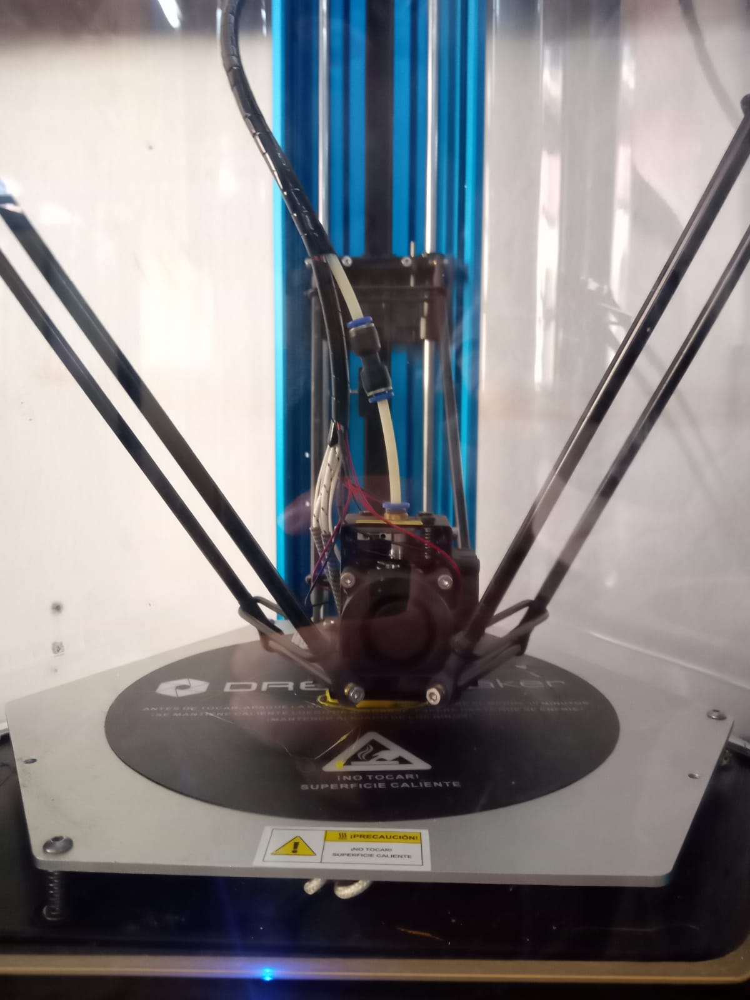
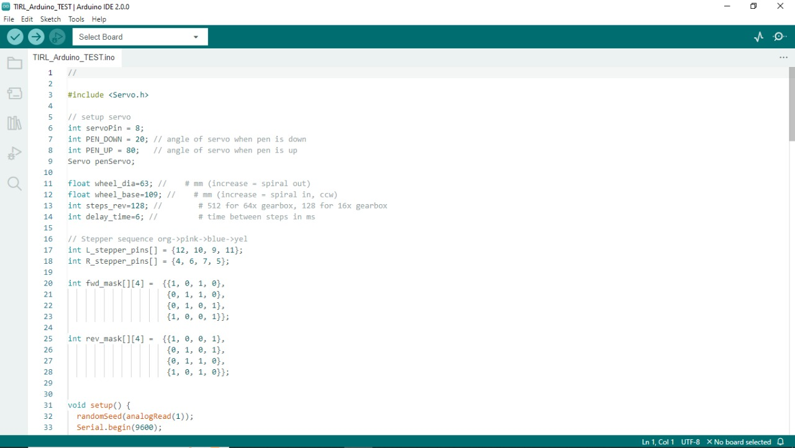

Robot Tortuga Dibujante
Este proyecto se trata de un robot “Tortuga” que diseña diferentes dibujos y la programación se basa en Arduino
Dicho proyecto empezo su fabricacion dentro de la impreora 3D, ahi se tuvieron que hacer las siguientes partes:
⦁ 1 x rueda con rodamiento de bolas
⦁ 1 chasis.
⦁ 2 ruedas.
⦁ 2 x soporte paso a paso
⦁ 1 soporte para bolígrafo/soporte para servo
⦁ 1 collar para bolígrafo.
¿Que harware se uso?
Hardware:
⦁ 2- 1 7/8" DI x 1/8" junta tórica
⦁ 1- Cojinete de rueda de 5/8"
⦁ 10- Tornillo de cabeza troncocónica M3 x 8 mm4 tornillos de cabeza plana M3 x 6 mm
⦁ 12- Tuerca M3
⦁ 2 - Rosca de 1/4" que forma 4-20 tornillos
Codigo en arduino
Para la parte logica del robot se uso una placa arduino que procesa los comandos y los transforma en movimiento, con simples comandos el robot sabe cuanto, como y para donde moverse.
ensamblaje
Para el ensamblaje se uso tiempo y pasiencia es un trabajo bastante simple a comparacion del resto del trabajo.
Asi se ve terminado el proyecto, gracias por ver.